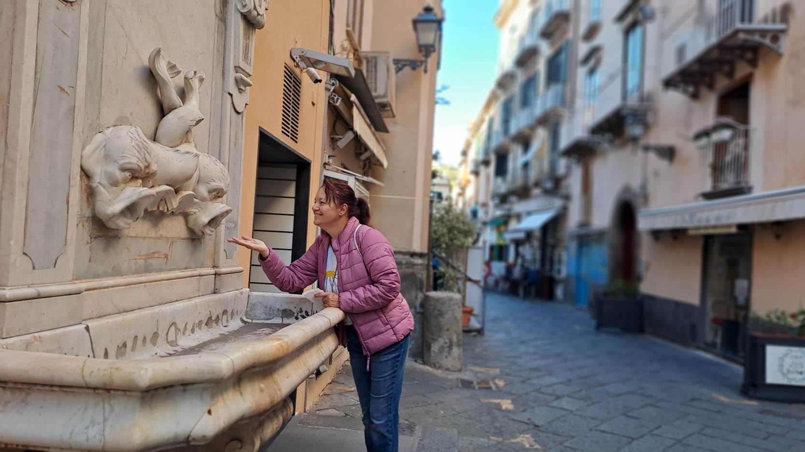
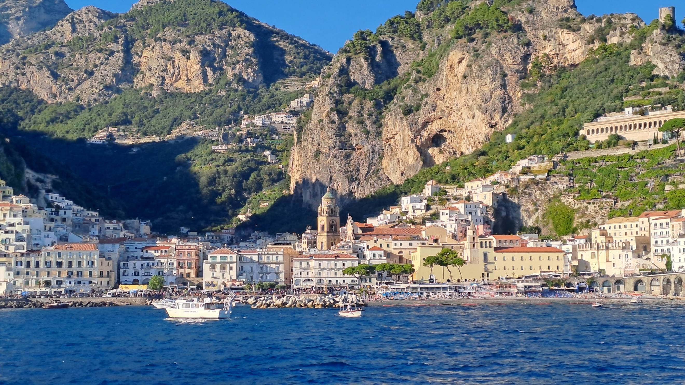
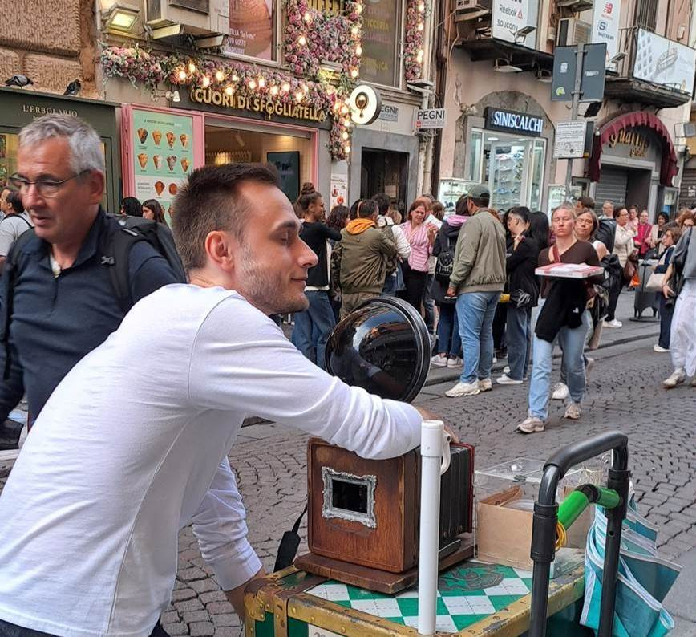
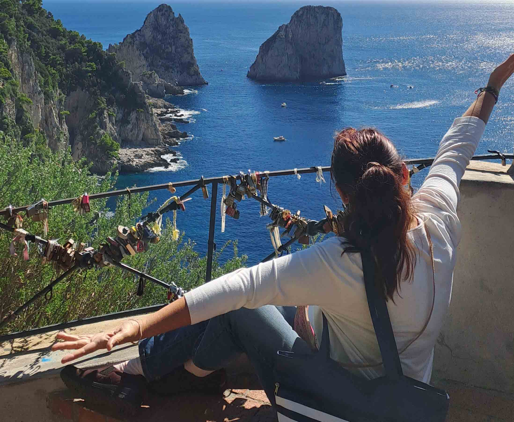

Bari u ponoć
Slećemo u Bari skoro u ponoć. Leteli smo iz Temišvara Wizz airom za 35 evra povratna avio karta. Red na rent-a-caru je ogroman, a službenici su spori za medalju. Čim smo sletele, naplate oni Dragani još 200 evra. Kako, zašto, kad još nismo ni prišli šalteru? Dragana obaveštava banku, a banka joj blokira karticu. Na šalteru shvatamo da je to depozit koji se vraća, a dobijamo i luksuzniji automobil: prostrani MG.
Krećemo ka parkingu sa ključem za koji mislimo da otključava MG na mestu 21. Međutim, daljinski ne reaguje, a ključaonice nema. Nastaje očaj. Srećom, nekoliko redova dalje nalazimo naš pravi auto koji je takođe MG, čak i jednako ogreban. Stižemo u Bari iz prve, pronalazimo smeštaj koji je iznad svih očekivanja, a rano ujutru krećemo za Sorento.
Sunčani Sorento i čuveni Amalfi
Granulo je sunce, nebo je plavo, a Saška nam peva Volare. Smeštaj u Sorentu nam je bio prelep, uređen u morskom fazonu sa pogledom na more. Zbog najavljene kiše sutra, odmah menjamo plan i krećemo brodićem za Amalfi.

Više o SorentuNa brodu su prozori bili musavi, ali smo brzo izašle na palubu. Srećom, jer su pogledi bili spektakularni. Usput stajemo u Pozitanu, gde Dragana izlazi, a brod kreće. Nastaje prava filmska scena: Dragana trči, nalazi brži brod i čeka nas u Amalfiju kod fontane pre nego što smo se mi uopšte iskrcale! Kakav šou.
Amalfi ima neverovatan šmek i katedralu. Sve miriše na limun: od slatkiša do sapuna i keramike. Ispunila sam sebi želju i prošetala u haljini na limunove, a u autobusu za Sorento nam je društvo pravila trudnica kojoj smo ustupile mesto, a ona nas zauzvrat počastila keksom sa limunom.

Više o AmalfijuUžurbani, ludi Napulj i fensi Kapri
Zbog lošeg vremena Kapri smo prebacile za sutra i dan provele u Napulju. Napulj je pravo ludilo i šarenilo uz prodavce koji već kao predstavu pakuju torbe koje prodaju sa ulica i beže od policije. Nakon kupovine i šetnje kroz prelepu galeriju, jele smo čuvenu napuljsku picu. Borba za mesto u vozu bila je stvarna, ali smo na kraju videle vatromet, kao i juče.

Više o NapuljuPoslednji dan, Kapri. Zbog zabune sa marinom (otišle smo u Marinu Grande umesto u Marina Piccola), jedva smo stigle na brod. Ali mondenski Kapri zaista vredi svake sekunde. Iako su gužve bile velike, popele smo se žičarom, uživale u pogledu na Faraglioni stene i napravile predivne fotografije.

Više o KaprijuEpilog avanture
Olbina je u šali rekla da smo se samo raketom nismo vozile – letele smo avionom, rentale auto do Sorenta, išle brodom do Amalfija, autobusom nazad, vozom do Napulja, taksijem, peške, a na Kapriju žičarom. Na kraju, svako je dobio ono što je želeo, a ja sam ponela najlepšu uspomenu: šetnju u haljini na limunove obalom Amalfija.
Vodič i saveti za putovanje
| Usluga / Aktivnost | Prosečna cena (okvirno za 2025/2026) | Korisni saveti |
|---|---|---|
| Rent-a-car (Bari) | 50 € – 80 € dnevno | Obavezno proverite stanje na kartici i budite spremni za depozit. Uski putevi zahtevaju oprez. |
| Brod / Trajekt (Amalfi – Kapri) | 20 € – 25 € u jednom pravcu | Karte možete kupiti onlajn ili na licu mesta. Marina Piccola je glavna marina za izlete a ne Marina Grande. |
| Smeštaj u Sorentu | 80 € – 140 € po noćenju | Blizina železničke i autobuske stanice je ključna za lako kretanje bez automobila. |
| Napuljska pica | 8 € – 12 € | Birajte autentične lokalne picerije van najpromenljivijih turističkih zona. |
FAQ: Često postavljana pitanja
1. Da li je bolje iznajmiti auto ili koristiti javni prevoz na obali?
Iako je auto koristan za dolazak iz Barija, putevi su uski i saobraćaj je gust. Preporučujemo da automobil parkirate u garažu ili kod smeštaja, a za obilazak obale koristite brodiće i autobuse.
2. Sorento ili Salerno kao baza?
Sorento je fantastična baza jer je odlično povezan vozom (Circumvesuviana) sa Napuljem i ima direktne linije brodova ka Kapriju i Amalfiju. Obratite pažnju kada sedate u autobus u Amalfiju da ne pomešate smer (Sorento je na jednu stranu a Salerno na drugu)!
3. Šta poneti sa obale kao suvenir?
Limun je zaštitni znak ove regije. Probajte lokalni sorbe od limuna, kupite limoncello, keramiku jarkih boja ili tipične magneta sa motivima italijanskih automobila i limuna.
💡 Saveti za putnike
- Marina Piccola i Marina Grande: Kada idete na izlete, obavezno proverite koja vam luka treba (manja za lokalne brodiće, veća za veće linije).
- Sorento kao baza: Sorento je fantastična baza za obilazak jer je blizu svih ključnih lokacija, a ima odličnu železničku i autobusku mrežu.
- Pazite na vozače i uske ulice: Ako vozite iznajmljenim automobilom, izbegavajte vožnju kroz male i strme delove Sorenta bez preke potrebe.
- Kišobran uz more: Amalfijska obala zna da bude vetrovita, ponesite otporan kišobran ili kabanicu.
👉 Pogledajte ceo putopis: Amalfi obala ceo putopis i vodič